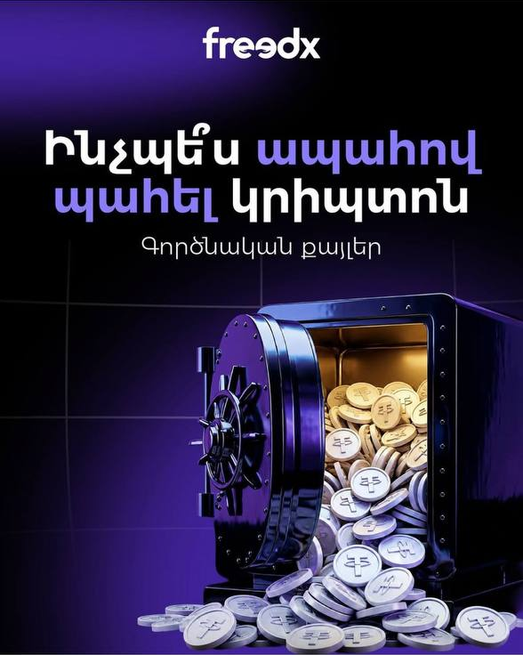
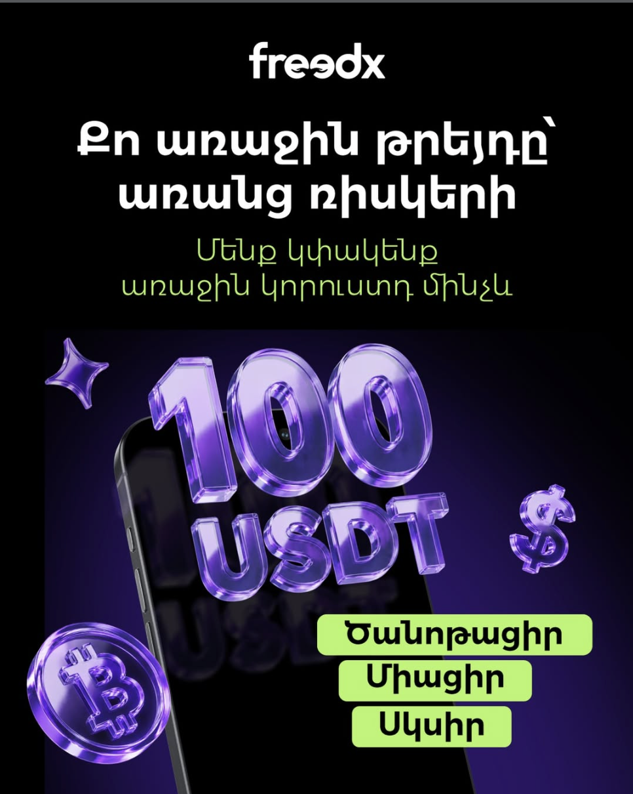

Կրիպտոյի մասին 5 միֆ, որոնց պատճառով մենք դեռ կողքից ենք հետևում
Բաց թողած հնարավորության մեջ ամենատհաճը դա հասկանալն է այն ժամանակ, երբ ուրիշներն արդեն օգտվել են դրանից։
Կրիպտոշուկան շարունակ փոխվում է։ Մարդիկ սովորում են գնել, փոխանակել, փոխանցել և տարբեր ձևերով օգտագործել թվային ակտիվները։ Նրանք փորձ են ձեռք բերում և քայլ առ քայլ հասկանում՝ ինչպես է այս ամենն աշխատում։
Իսկ ոմանք այդ ընթացքում շարունակում են կողքից հետևել։ Ցանկանում են փորձել, բայց ամեն անգամ նոր պատճառ են գտնում մի փոքր էլ սպասելու։
Եկեք քննարկենք 5 տարածված միֆ, որոնց պատճառով առաջին քայլը հաճախ ավելի վախեցնող է թվում, քան իրականում կա։
«Կրիպտոարժույթը կարող է մի օր պարզապես արժեզրկվել»
Առանձին մետաղադրամ իսկապես կարող է կտրուկ էժանանալ կամ նույնիսկ գրեթե ամբողջությամբ կորցնել իր արժեքը։ Բայց սխալ է մտածել, որ ամբողջ կրիպտոշուկան մեկ նախագիծ է։
Bitcoin-ը, Ethereum-ը, USDT-ն, USDC-ն և հազարավոր այլ ակտիվներ միմյանցից անկախ են և տարբեր նպատակներ ունեն։ Եթե մեկ նախագիծ ձախողվում է, դա չի նշանակում, որ դրա հետ միասին վերանում է ամբողջ կրիպտոշուկան։
Կան նաև սթեյբլքոյններ՝ օրինակ USDT և USDC։ Դրանք ստեղծված են այնպես, որ դրանց արժեքը սովորաբար պահպանվի մոտ $1-ի սահմանում։ Այդ պատճառով դրանք հաճախ օգտագործում են միջոցներ պահելու, փոխանցելու և փոխանակելու համար՝ առանց գնի անընդհատ կտրուկ տատանումների։
Այսինքն՝ պետք չէ վախենալ «կրիպտոարժույթից ընդհանրապես»։ Ավելի կարևոր է հասկանալ՝ ինչ ակտիվ եք ընտրում և ինչ նպատակով։
«Կրիպտոարժույթ պահելը անվտանգ չէ»
Կարևոր է հասկանալ՝ որտեղ եք պահում ձեր կրիպտոն և ինչպես է պաշտպանված ձեր հաշիվը։
Անվտանգությունը կախված է ոչ միայն ակտիվից, այլև այն հարթակից, որից օգտվում եք։ Օրինակ՝ Freedx-ում կարելի է ակտիվացնել երկփուլ նույնականացումը (2FA)։ Այդ դեպքում հաշիվ մուտք գործելիս և միջոցներ դուրս բերելիս անհրաժեշտ է լրացուցիչ հաստատման կոդ։
Գաղտնաբառը փոխելուց հետո միջոցների դուրսբերումը նաև ժամանակավորապես սահմանափակվում է։ Սա լրացուցիչ պաշտպանություն է այն դեպքում, եթե որևէ մեկը փորձի մուտք գործել ձեր հաշիվ։
Այսինքն՝ հարցը ոչ թե այն է, որ «կրիպտոարժույթը անվտանգ չէ», այլ այն, թե ինչ հարթակ եք ընտրում և ինչպես եք պաշտպանում ձեր հաշիվը։

«Կրիպտոարժույթը չափազանց բարդ է»
Կրիպտոյի հիմքում իսկապես բարդ տեխնոլոգիա կա։ Բայց բարդ կառուցվածքը դեռ չի նշանակում, որ դրանից օգտվելն էլ է բարդ։
Բանկային փոխանցում անելու համար մենք պարտադիր չենք հասկանում՝ ինչպես է ներսից աշխատում ամբողջ բանկային համակարգը։ Կրիպտոյի դեպքում այսօր իրավիճակը շատ նման է։
Ժամանակակից հարթակում կարելի է գրանցվել, անցնել նույնականացում և հաշիվը համալրել ձեզ ծանոթ եղանակով՝ բանկային քարտով, Google Pay-ով կամ մեկ այլ կրիպտոդրամապանակից փոխանցմամբ։ Դրանից հետո արդեն կարելի է մի քանի պարզ գործողությամբ գնել, փոխանակել կամ փոխանցել կրիպտոարժույթ։
Այդ պատճառով պարտադիր չէ առաջին քայլից առաջ հասկանալ բլոկչեյնի, ցանցերի և տասնյակ նոր տերմինների բոլոր մանրամասները։ Դրանք կարելի է սովորել աստիճանաբար՝ հենց այն ժամանակ, երբ իրականում պետք գան։
«Կրիպտոյով առևտուր անելու համար պետք է պրոֆեսիոնալ թրեյդեր լինել»
Առևտուրը պահանջում է շուկայի որոշակի հասկանալ, բայց առաջին քայլի համար պարտադիր չէ պրոֆեսիոնալ լինել։
Օրինակ՝ Spot շուկայում կարելի է պարզապես գնել ակտիվը և ավելի ուշ վաճառել, եթե դրա գինը բարձրացել է։
Լավ օրինակ է Solana-ն։ 2023 թվականի սկզբին SOL-ի գինը մոտ $10 էր, իսկ տարվա վերջում արդեն գերազանցում էր $100-ը։ Այսինքն՝ մարդը, ով այդ ժամանակ գնել էր ակտիվը և պարզապես պահել, կարող էր իր ներդրման արժեքը մոտ 10 անգամ մեծացնել։
Իհարկե, նման աճ միշտ չէ, որ տեղի է ունենում, և գինը կարող է նաև նվազել։ Բայց այս օրինակը ցույց է տալիս գլխավորը՝ թրեյդինգը պարտադիր չէ նշանակում օրական տասնյակ գործարքներ և ամբողջ օրը գրաֆիկներին հետևել։
«Եթե սկսեմ թրեյդինգով զբաղվել, կկորցնեմ գումարս»
Այդ ռիսկը իսկապես կա։ Ցանկացած գործարք կարող է լինել թե՛ շահութաբեր, թե՛ վնասաբեր, և դա պետք է հասկանալ դեռ սկզբից։
Բայց սխալ է մտածել, որ առաջին անհաջող գործարքը նշանակում է՝ ամեն ինչ ավարտված է։
Հենց այստեղ Freedx-ը նոր օգտատերերի համար ունի առաջարկ․ եթե առաջին Spot կամ Futures գործարքը վնասով փակվի, հնարավոր է ստանալ մինչև 100 USDT փոխհատուցում։
Այս առաջարկը հնարավորություն է տալիս առաջին գործարքը սկսել ավելի վստահ և կենտրոնանալ փորձ ձեռք բերելու վրա։

Վերջաբան
Կրիպտոարժույթը ավելի հասկանալի չի դառնում միայն այն պատճառով, որ մենք հետաձգում ենք դրա հետ ծանոթությունը։
Ռիսկեր կան, շուկան փոխվում է, իսկ մեկ օրում ամեն ինչ հասկանալ հնարավոր չէ։ Բայց առաջին քայլն անելու համար պարտադիր չէ նաև ամեն ինչ նախապես իմանալ։
Մինչ ոմանք շարունակում են կողքից հետևել, մյուսները աստիճանաբար փորձ են ձեռք բերում, սովորում են օգտվել նոր գործիքներից և ավելի լավ հասկանում շուկայի հնարավորությունները։
Կարևորը չշտապելն է, հասկանալը՝ ինչ եք անում, և ընտրել այն հարթակը, որին պատրաստ եք վստահել։
Եթե վաղուց եք ցանկանում փորձել, գուցե պետք չէ սպասել այն օրվան, երբ բոլոր կասկածները կվերանան։
Երբեմն բավական է պարզապես անել առաջին՝ հասկանալի քայլը։